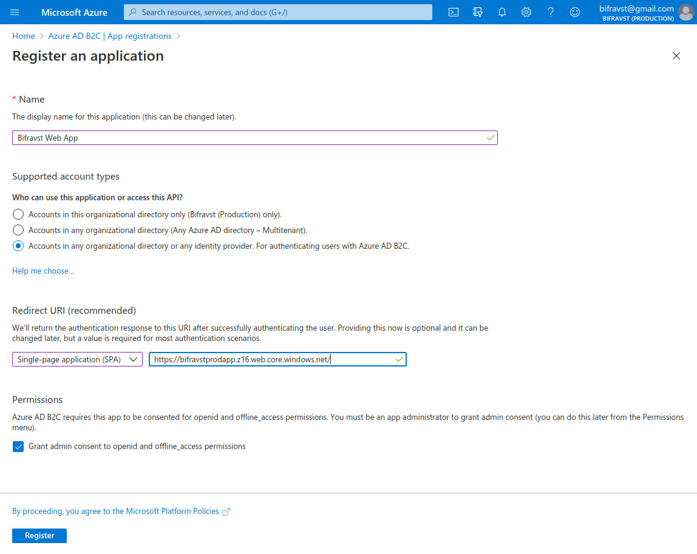

Continuous deployment¶
Continuous deployment must be deployed with a dedicated subscription to have clear control over the permissions and costs. For continuous deployment, complete the following steps:
Create a subscription for Bifravst.
Create an Azure Active Directory B2C.
Acquire credentials for the CI runner and deploy the project.
Create a subscription for Bifravst¶
To create a subscription for Bifravst, complete the following steps:
Login to the Azure portal.
Navigate to the Subscriptions blade and add a new subscription for Bifravst by clicking Add. Name the new subscription as
Bifravst [CD].After creating the subscription, navigate to the Subscriptions blade and export the subscription identifier of the newly created subscription:
export SUBSCRIPTION_ID="<subscription id>"
Create an Azure Active Directory B2C¶
Note
Currently, you can create an Azure Active Directory B2C only through the CLI. If you have ideas to simplify the setup process, share your input.
To create an Azure Active Directory B2C, complete the following steps:
After logging in to the Azure portal, navigate to the Marketplace blade and search for
Azure Active Directory [B2C].Click on the Azure Active Directory [B2C] tile, and then click the Create button.
Select Create a new Azure AD B2C Tenant.
Use the following settings while creating the Azure AD B2C Tenant:
Organization name -
Bifravst (Production)Initial domain name -
bifravstprod(Choose a name that fits your project as the given name is globally unique)Country/Region - Sweden (or choose a location that is closer to you)

Create Directory settings¶
Click Next: Review + create to see the summary and then click Create to create the new Active Directory B2C. The operation will take a while to complete.
Copy the initial domain name to the
B2C_TENANTenvironment variable:export B2C_TENANT=bifravstprod
Switch to the newly created directory by following the link in the success message.
You must link a subscription to the B2C Directory. Follow the link in the notification message to find the instructions as shown in the figure:

Link Subscription¶
Select the subscription and create a new resource group for this subscription assignment as shown in the following figure:

Link Subscription¶
Switch back to the B2C directory.
Create an App Registration:
Name - Bifravst Web App
Redirect URI (make sure to select SPA) -
https://bifravstprodapp.z16.web.core.windows.net/(Choose another name that fits your project instead ofbifravstprodappsince this name is globally unique)
Create App Registration settings¶
Click Expose an API and set the
Application ID URIfield toapi.Click + Add a scope and create a new scope with the following values:
Scope name -
bifravst.adminAdmin consent display name - Admin Access to the Bifravst API
Admin consent description - Allows admin access to all resources exposed through the Bifravst API
Click API permissions and then click + Add a permission. Under My APIs, select the app registration.
Enable the
bifravst.adminpermission and click Add permission.Click Grant admin consent for <your main directory> as shown in the following figure:

Add Scope¶
Store the
application (client) idand theDirectory (tenant) IDof the created Active Directory B2C App registration:export APP_REG_CLIENT_ID="<application (client) id>"
Enable the implicit grant flow for Access tokens and ID tokens and click Save as shown in the following figure:

Enable implicit grant flow¶
Store the subdomain name used in the Redirect URI:
export APP_NAME=bifravstprodapp
Create the Sign up and sign in user flow for local users, and name it
signup_signin. For more information, see the Azure Active Directory B2C documentation on creating user flow.Switch back to the main directory.
Find the Bifravst Azure Function App.
Select Authentication / Authorization.
Select
Log in with Azure Active Directoryfor the option Action to take when request is not authenticatedClick Azure Active Directory and configure the authentication using the Advanced Management mode:
Client ID -
$APP_REG_CLIENT_IDIssuer URL -
https://${B2C_TENANT}.b2clogin.com/${B2C_TENANT}.onmicrosoft.com/v2.0/.well-known/openid-configuration?p=B2C_1_signup_signin

Function App Settings¶
Acquire credentials for the CI runner¶
To acquire credentials for the CI runner, complete the following steps:
Login using the shell:
az login
Make sure that you have enabled the correct subscription by running the following commands:
az account set --subscription $SUBSCRIPTION_ID # Verify that it is set to default az account list --output table
Enable required resources using the following commands:
az provider register --namespace Microsoft.AzureActiveDirectory az provider register --namespace Microsoft.Storage az provider register --namespace Microsoft.Insights az provider register --namespace Microsoft.SignalRService az provider register --namespace Microsoft.DocumentDB az provider register --namespace Microsoft.Devices az provider register --namespace Microsoft.Web
Create the CI credentials:
az ad sp create-for-rbac --name https://github.com/ --role Contributor --sdk-auth --scopes /subscriptions/${SUBSCRIPTION_ID} > ci-credentials.json
Create a resource group for Bifravst:
az group create --name ${RESOURCE_GROUP_NAME:-bifravst} --location ${LOCATION:-northeurope}
Fork the Bifravst Azure project and add the following secrets.
AZURE_CREDENTIALS- Store the contents of the JSON file created in the above step.APP_REG_CLIENT_ID- Theapplication (client) idof the Active Directory B2C App registration that is created.B2C_TENANT- Theinitial domain nameof the Active Directory B2C that is created.
Start a deployment.
You can now create device credentials for this environment.